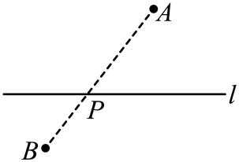
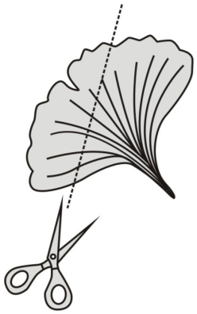
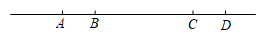
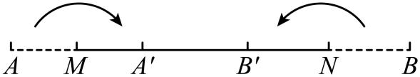
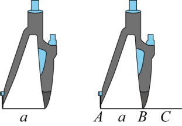
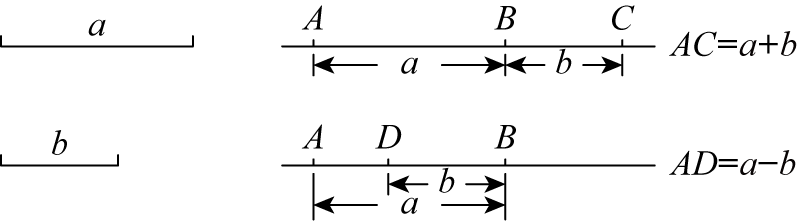
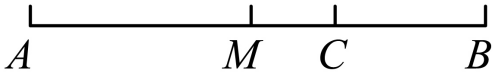
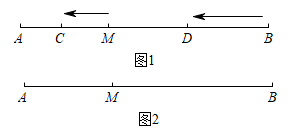

专题4.1 线段、射线、直线（举一反三讲义）
【北师大版2024】

【题型1 直线、射线、线段】 2
【题型2 两点确定一条直线】 3
【题型3 两点之间线段最短】 4
【题型4 线段中点的有关计算】 5
【题型5 两点间的距离】 6
【题型6 比较线段的长短】 6
【题型7 线段的和差】 7
【题型8 尺规作线段】 8
【题型9 线段n等分点的有关计算】 9
【题型10 探究线段之间的数量关系】 9
【题型11 与线段有关的动点问题】 10

知识点1 直线
1. 直线的基本事实：经过两点有一条直线，并且只有一条直线．简单说成，两点确定一条直线．
2. 直线可以用表示直线上任意两点的大写字母来表示，且字母不分顺序，也可以用一个小写字母来表示，但不能用两个小写字母或一个大写字母或一大写一小写两字母来表示．
3. 当两条不同的直线有一个公共点时，就称这两条直线相交，这个公共点叫作它们的交点．
4. 直线没有端点，没有长度，不可度量．“延长直线”的说法是错误的．
知识点2 射线
1. 与直线的表示类似，射线也可以用表示端点和射线上另一个点的两个大写字母来表示，也可以用一个小写字母来表示．
2. 射线只有一个端点，没有长度，不可度量．如下图，“延长射线AB”的说法是错误的，但可以说“反向延长射线AB”．

知识点3 线段
1. 线段的表示：线段可以用表示端点的两个大写字母表示，也可以用一个小写字母来表示．下图中的线段可以表示为线段AB、线段BA或线段a．

2. 线段的基本事实：两点的所有连线中，线段最短．简单说成：两点之间，线段最短．
3. 线段、射线、直线的区别与联系
线段 | 射线 | 直线 | ||
图形 |
|
|
| |
表示 | 线段EF或线段FE 或线段l | 射线CD | 直线AB或直线BA或直线l | |
区别 | 端点 | 有两个端点 | 有一个端点 | 无端点 |
延伸 | 不可以延伸 | 一端可以无限延伸 | 可以无限延伸 | |
度量 | 可以度量 | 不可以度量 | 不可以度量 | |
联系 | 都属于“线”，都是直的；线段和射线是直线的一部分 | |||
基本事实 | 两点之间，线段最短 | 两点确定一条直线 | ||


4. 两点间的距离：连接两点的线段的长度，叫作这两点间的距离．
5. 线段的比较：比较两条线段的长短，可用刻度尺分别测量出它们的长度来比较，或者把其中的一条线段移到另一条线段上作比较．
6. 点和直线的位置关系：点在直线上或点在直线外，也可以说成直线经过点或直线不经过点．
7. 线段的计算：线段也可以进行和差倍分的计算，线段的计算是指线段的长度的计算．
8. 线段的中点：把一条线段分成两条相等的线段的点，叫作线段的中点．如图，若点O是线段AB的中点，则有AO＝BO＝12AB．反之成立，即若点O为线段AB上一点，且满足AO＝BO＝12AB，那么点O为线段AB的中点．

9. 线段的n等分点：若线段上（n－1）个点把这条线段分成了n条相等的线段，则称这（n－1）个点为这条线段的n等分点．
【题型1 直线、射线、线段】
【例1】（24-25七年级上·全国·随堂练习）下列语句正确的是（ ）
A．画直线AB=10厘米 B．画射线OB=3厘米
C．在射线OA上截取AB=2厘米 D．延长线段AB到点C，使得BC=AB
【变式1-1】（24-25七年级上·全国·课后作业）如图，点A，B，C在直线l上，则图中有 条线段， 条射线，有 条直线．

【变式1-2】平面上有四点A、B、C、D，根据下列语句画图．
(1)画直线AD；
(2)连接AC、BD，相交于点O；
(3)画射线CB．
【变式1-3】（24-25七年级上·湖北武汉·期末）某列车往返于武汉站与南昌西站，途经鄂州、黄石北与庐山站，列车迷贤哥想收集该列车所有不同的车票（起点或终点不一样都算不同的车票），则他需要购买（ ）张车票
A．6 B．10 C．15 D．20
【题型2 两点确定一条直线】
【例2】（25-26七年级上·全国·课后作业）如图所示，网格纸上有八个点同时经过其中3个点的直线有（ ）

A．1条 B．2条 C．3条 D．4条
【变式2-1】（24-25七年级上·河南平顶山·期末）墨斗是中国传统木工行业画直线的常用工具．如图，木工师傅锯木料时，一般先在木板上画出两个点，从墨斗中拉出墨线一端固定在一个点，另一端固定在另一点，绷紧并提起墨线中段，过这两点就弹出一条墨线，木工师傅这样做的道理是： ．

【变式2-2】（24-25七年级上·河南郑州·阶段练习）在下列现象中，体现了基本事实“两点确定一条直线”的有 个．

【变式2-3】（25-26七年级上·全国·课后作业）平面上有五个点，其中只有三点在一条直线上，此外无其他三点共线，经过这些点可以作直线的条数是（ ）
A．6 B．8 C．10 D．12
【题型3 两点之间线段最短】
【例3】（2025·吉林·模拟预测）如图所示，小明到小颖家有三条路，小明想尽快到小颖家，请你帮他选线路 ，用数学知识解释为 ．

【变式3-1】如图，A、B是河l两侧的两个村庄．现要在河l上修建一个抽水站P，使它到两个村庄A，B的距离和最小，小丽认为在图中连接AB与l的交点就是抽水站P的位置，你认为这里用到的数学基本事实是（ ）

A．经过一点能画无数条直线
B．两点之间，线段最短
C．两点确定一条直线
D．连接两点间的线段的长度，叫做这两点的距离
【变式3-2】（24-25七年级上·北京昌平·期末）昌平区南邵镇张各庄村的银杏林是北京面积最大的银杏林，这里有超过80万株的银杏树．小林同学在游玩时收集了一些银杏落叶用来制作手工，如图，她用剪刀沿直线将一片平整的银杏叶剪掉一部分，发现剩下的银杏叶的周长比原银杏叶周长要小，理由是 ．

【变式3-3】（24-25七年级下·广东河源·期末）小华准备从A地去往B地，打开导航，测距显示两地相距280km，但导航提供的三条可选路线长却分别为367km，373km，369km，能解释这一现象的数学知识是（ ）
A．两点之间线段最短
B．垂线段最短
C．两点确定一条直线
D．在同一平面内，过一点有且仅有一条直线垂直于已知直线
【题型4 线段中点的有关计算】
【例4】（24-25六年级下·全国·单元测试）如果线段AB=4cm，C是AB的中点，延长CB到D，使CD=4cm，E是AD的中点，则AE的长度为（ ）
A．3cm B．3.5cm C．4cm D．4.5cm
【变式4-1】线段AB=5，延长AB到C，使BC=2AB，若D为AB的中点，则DC的长是 ．
【变式4-2】（25-26七年级上·全国·课后作业）如图，已知P为线段AN的中点，Q是线段AM的中点，则MNPQ的值为 ．

【变式4-3】（24-25七年级上·重庆·阶段练习）线段AB=12，点C为线段AB上的三等分点，当点D为线段CB的中点，则线段DB的长为（ ）
A．4 B．6 C．2或6 D．2或4
【题型5 两点间的距离】
【例5】（24-25七年级上·甘肃白银·阶段练习）如果线段AB=3cm，BC=4cm，则A、C两点间的距离是（ ）
A．7cm B．1cm C．7cm或1cm D．无法确定
【变式5-1】（24-25七年级上·江苏南京·阶段练习）如图，B、D在线段AC上， BD=13AB=14CD，线段AB、CD的中点E、F之间距离是10cm，则AB= cm．

【变式5-2】已知直线l上有A、B、C三点，AB=10，BC=4，则AC= ．
【变式5-3】（24-25七年级上·浙江宁波·期末）如图，直线上有五个点A，B，C，D，E，连接其中两点形成的10个距离，从小到大排列依次为：2，4，5，7，8，k，13，15，17，19，那么k的值是 ．
【题型6 比较线段的长短】
【例6】（25-26七年级上·全国·课后作业）如图，一个三角形纸片，不用任何工具，你能准确比较线段AB与线段AC的大小吗？试用你的方法分别确定线段AB，AC的中点．

【变式6-1】（24-25七年级上·陕西咸阳·阶段练习）如图，用圆规比较两条线段AB和A′B′的长短，图中的两个圆规大小相同且夹角相等，其中正确的是（ ）

A．A′B′>AB B．A′B′=AB
C．A′B′<AB D．没有刻度尺，无法确定
【变式6-2】为了比较线段AB和线段CD的长短，把线段CD移到线段AB上，使点C与点A重合．（填“>”“=”或“<”）
（1）当点D落在线段AB上时，AB CD；
（2）当点D与点B重合时，AB CD；
（3）当点D落在线段AB的延长线上时，AB CD．
【变式6-3】如图：A、B、C、D四点在同一直线上．若AC=BD．
（1）比较线段的大小：AB CD（填“＞”、“＝”或“＜”）；
（2）若BC=34AC，且AC=8cm，求AD的长．

【题型7 线段的和差】
【例7】如图，点M、N在线段AB上，AMMB=13，ANNB=23，若MN=2，则AB的长为（ ）

A．103 B．403 C．475 D．235
【变式7-1】已知线段AB，延长AB到C，使BC=2AB，在AB的反向延长线上截取AD=AC，则DB:AB= ．
【变式7-2】如图，AB=17cm，点C是线段AB延长线上一点，在线段BC上取一点N，使BN=3CN，点M为线段AC的中点，则MN−13BN= cm．

【变式7-3】（24-25七年级上·山东济南·期末）如图，AB为一根长为25 cm的绳子，拉直铺平后，在绳子上任意取两点M、N，分别将AM、BN沿点M、N折叠，点A、B分别落在绳子上的点A′、B′处．当A′B′=5 cm时，MN的长为（ ）

A．10 cm B．25 cm
C．10 cm或15 cm D．15 cm或25 cm
知识点4 用尺规作图
1. 作一条线段等于已知线段
作法：第一步，作射线AC．第二步，以点A圆心，线段a的长为半径画弧，交射线AC于点B．则线段AB就是所求作的线段．

2. 作线段的和、差
在直线上作线段AB＝a，再在线段AB的延长线上作线段BC＝b，线段AC就是a与b的和，记作AC＝a+b；
设线段a>b，如果在线段AB上作线段BD＝b，那么线段AD就是α与b的差，记作AD＝a－b．

【题型8 尺规作线段】
【例8】（25-26七年级上·全国·课后作业）线段a，b，c如图所示，用尺规作一条线段AD，使AD=a+b−c（保留作图痕迹，不写作法）．
【变式8-1】作图：已知线段a、b，请用尺规作线段EF使EF＝a+b．请将下列作图步骤按正确的顺序排列出来（只填序号） ．
作法：①以M为端点在射线MG上用圆规截取MF＝b；②作射线EG；③以E为端点在射线EG上用圆规截取EM＝a；④EF即为所求的线段．
【变式8-2】（24-25七年级上·甘肃兰州·期末）如图，在操作课上，同学们按老师的要求操作：①作射线AM；②在射线AM上顺次截取AC=CD=a；③在射线DM上截取DE=b；④在线段EA上截取EB=c，发现点B在线段CD上．由操作可知，线段AB= ．
【变式8-3】如图，点C、D分别是线段AB上两点（CD>AC，CD>BD），用圆规在线段CD上截取CE=AC，DF=BD，若点E与点F恰好重合，AB=9，则CD长为（ ）
A．4 B．4.5 C．5 D．5.5
【题型9 线段n等分点的有关计算】
【例9】（24-25七年级上·湖北武汉·期末）已知线段AB长为12，点D是线段AB的三等分点，点C是线段AB上一点，且满足AC+CD=BC，则AC= ．
【变式9-1】如图所示，长为12cm的线段AB的中点为M，C将线段MB分为MC和CB，且MC:MB=1:3，则线段AC的长为（ ）

A．10 B．9 C．8 D．7
【变式9-2】把根绳子对折成一条线段AB，在线段AB取一点P，使AP=13PB，从P处把绳子剪断，若剪断后的三段绳子中最长的一段为24cm，则绳子的原长为（ ）
A．32cm B．64cm C．32cm或64cm D．64cm或128cm
【变式9-3】在直线l上有A、B、C、D四点，其中点B是线段AD的三等分点，点C是线段AD的中点，点E是线段AD延长线上一点，且AE+BE=2AD，则BECE的值为 ．
【题型10 探究线段之间的数量关系】
【例10】（24-25七年级下·湖南郴州·开学考试）如图，线段AC上依次有D，B，E三点，AD=12DB，E是BC的中点，BE=13DE=2．

(1)求证：AD=BE；
(2)求线段AC的长．
【变式10-1】（24-25七年级上·安徽六安·期末）如图，C为线段AB上一点，AB=m，BC=n，M、N分别为AC、BC的中点．

(1)若m=10，n=4，求MN的长；
(2)若m=5n，求CNCM的值．
【变式10-2】（24-25七年级上·重庆巴南·期末）如图，直线上有A、B、M、N、Q五点，点M是线段AB的三等分点，点N是线段AB的中点，点Q是线段AB延长线上一点，且AQ=2AB−MQ，则NQBQ的值为 ．
【变式10-3】（2025八年级上·全国·专题练习）已知线段AB，C，M都是直线AB上的点，若AB>BC，M是BC的中点．求证：AC+AB=2AM．
【题型11 与线段有关的动点问题】
【例11】如图，点C在线段AB上，图中有三条线段AB、AC和BC，若其中一条线段的长度是另一条线段长的2倍，则称点C是线段AB的“巧点”，若已知线段AB=20，点C是线段AB的“巧点”，则AC= ．

【变式11-1】（24-25七年级上·全国·期末）如图，线段AB=20cm，O是线段AB上的中点，P、Q是线段AB上的动点，点P沿A→B→A以4cm/s的速度运动，点Q沿B→A以2cm/s的速度运动．若P、Q点同时运动，当OP=OQ时，运动时间为（ ）．

A．0s、10s或53s B．0s、5s或103s
C．0s、103s、203s或10s D．0s、5s、53s或103s
【变式11-2】如图1，已知线段AB=20cm，点M是线段AB上一点，点C在线段AM上，点D在线段BM上，C、D两点分别从M、B出发以acm/s、bcm/s的速度沿直线BA运动，运动方向如箭头所示，其中a、b满足条件：|a−1|+|b−3|=0．

(1)直接写出：a=____________，b=_____________；
(2)若2cm<AM<4cm，当点C、D运动了3s，求AC+MD的值；
(3)如图2，若AM=13AB，点N是直线AB上一点，且AN−BN=MN，求MN与AB的数量关系．
【变式11-3】已知有理数a，b，c在数轴上对应的点从左到右顺次为A，B，C，其中b是最小的正整数，a在最大的负整数左侧1个单位长度，BC=2AB．
（1）填空：a= ，b= ，c=
（2）点D从点A开始，点E从点B开始， 点F从点C开始，分别以每秒1个单位长度、1个单位长度、4个单位长度的速度在数轴上同时向左运动，点F追上点D时停止动，设运动时间为t秒．试问：
①当三点开始运动以后，t为何值时，这三个点中恰好有一点为另外两点的中点？
②F在追上E点前，是否存在常数k，使得DF+k⋅EF的值与它们的运动时间无关，为定值．若存在，请求出k和这个定值；若不存在，请说明理由．